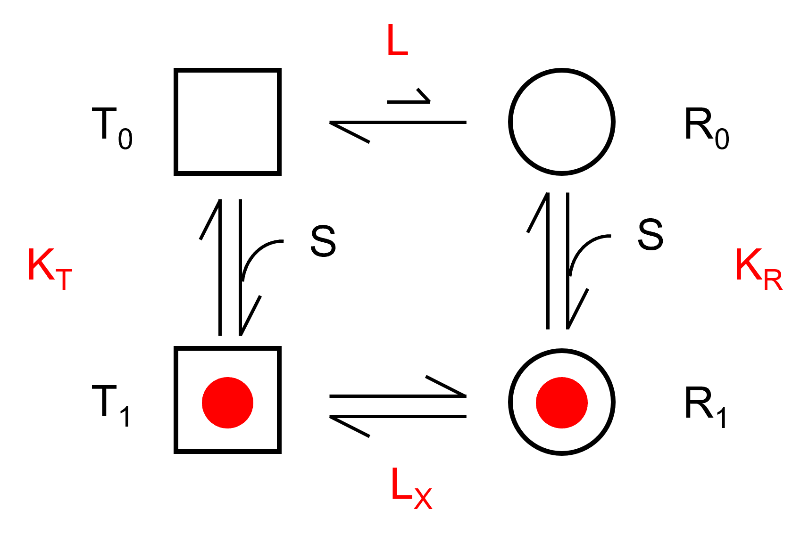
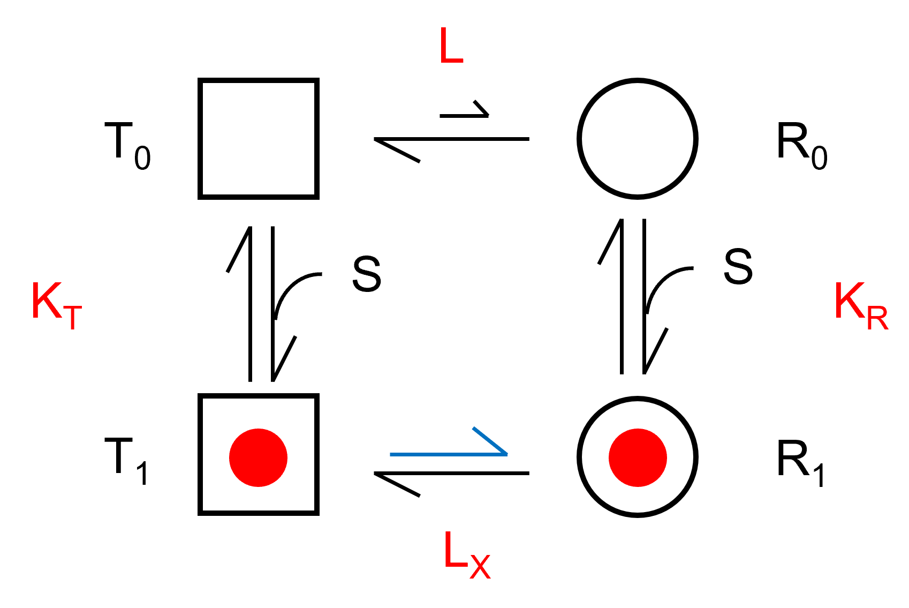

アロステリックモデル再考-06 MWCモデル
平衡状態から
MWCモデルを考えてきましたが，この反応スキームには，T0とR0との平衡はあるものの，T1とR1との平衡は考えていませんでした．
しっかりと速度定数から考えていこうとしましたが，複雑になってしまったので，平衡，から考えていくことにしました．
ご助言いただいた，高田先生（京都大学），ありがとうございます．
4状態モデル

まずはT状態とR状態を遷移する4状態モデルを考えます．
赤文字がそれぞれの平衡，解離定数を表します．
\( \Large \frac{T_0}{R_0} = L\)
\( \Large \frac{T_1}{R_1} = L_X \)
\( \Large \frac{T_0}{T_1} = \frac{K_T}{S} \)
\( \Large \frac{R_0}{R_1} = \frac{K_R}{S} \)
また，\( \Large T_0 >> R_0 = L\)とします．
ここで示した，KT，KRは，以前に示したものと若干意味合いが異なりますね．
単に，二状態の平衡を考えた値となります．
ここで，
\( \Large 1 = \frac{T_0}{R_0} \frac{R_0}{R_1} \frac{R_1}{T_1}\frac{T_1}{R_0} = L \cdot K_R \cdot \frac{1}{L_X} \cdot \frac{1}{K_T} \)
となるので，
\( \Large L \cdot K_R = L_X \cdot K_T \)
となります．ここで，R状態のほうが基質との結合アフィニティが高いとすると，
\( \Large K_R < K_T \) となり，
\( \Large c \equiv \frac{K_R}{K_T} < 1 \) となります．
つまり，\( \Large \frac{L_X}{L} = \frac{K_R}{K_T} < 1 \) となり，T1とR1はR1寄りとなるのです．

基質飽和度
基質飽和度，Yは，
\( \Large \begin{eqnarray} Y &=& \frac{T_1 + R_1}{ T_0 +T_1 + R_0 + R_1 } \\
&=&
\frac{ T_0 \frac{s}{k_T} + R_0 \frac{s}{k_R} }{T_0 + T_0 \frac{s}{k_T} + R_0 + R_0 \frac{s}{k_R} } \\
&=&
\frac{ L R_0 \frac{s}{k_R /c} + R_0 \frac{s}{k_R} }{L R_0 + L R_0 \frac{s}{k_R /c} + R_0 + R_0 \frac{s}{k_R} } \\
&=&
\frac{ Lc \frac{s}{k_R } + \frac{s}{k_R} }{L + L c \frac{s}{k_R } + 1 + \frac{s}{k_R} } \\
\end{eqnarray} \)
となります．
ここで，
\( \Large \alpha \equiv \frac{S}{K_R} \)
とすると，
\( \Large Y = \frac{ Lc \alpha + \alpha }{L + L c \alpha + 1 + \alpha} \)
となります．
次に，6状態を考えていきましょう．